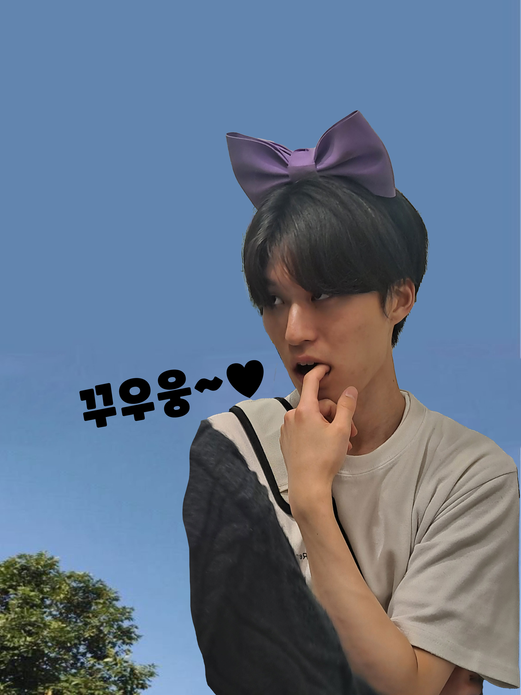
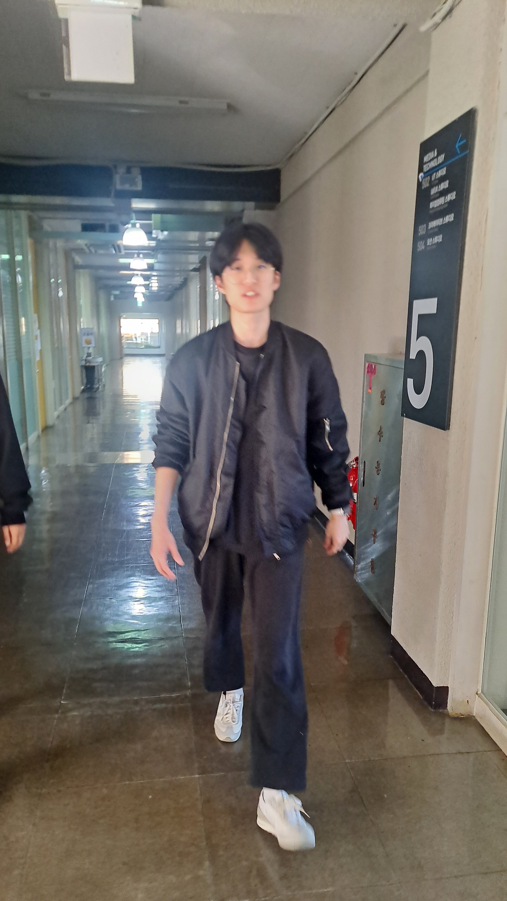
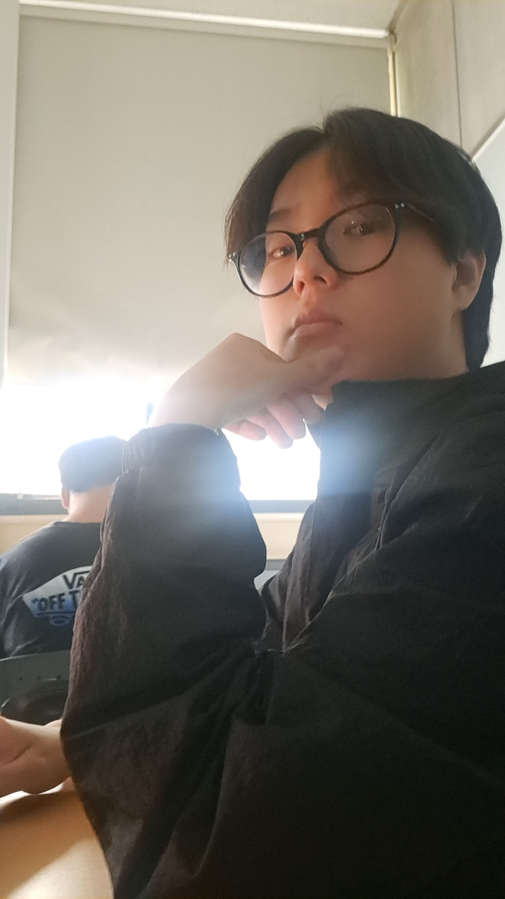
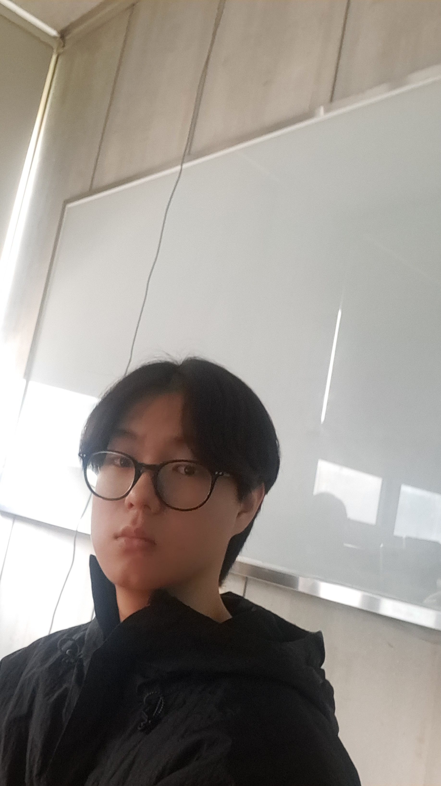
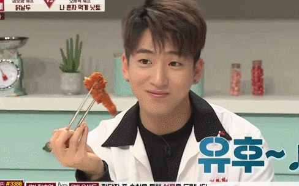
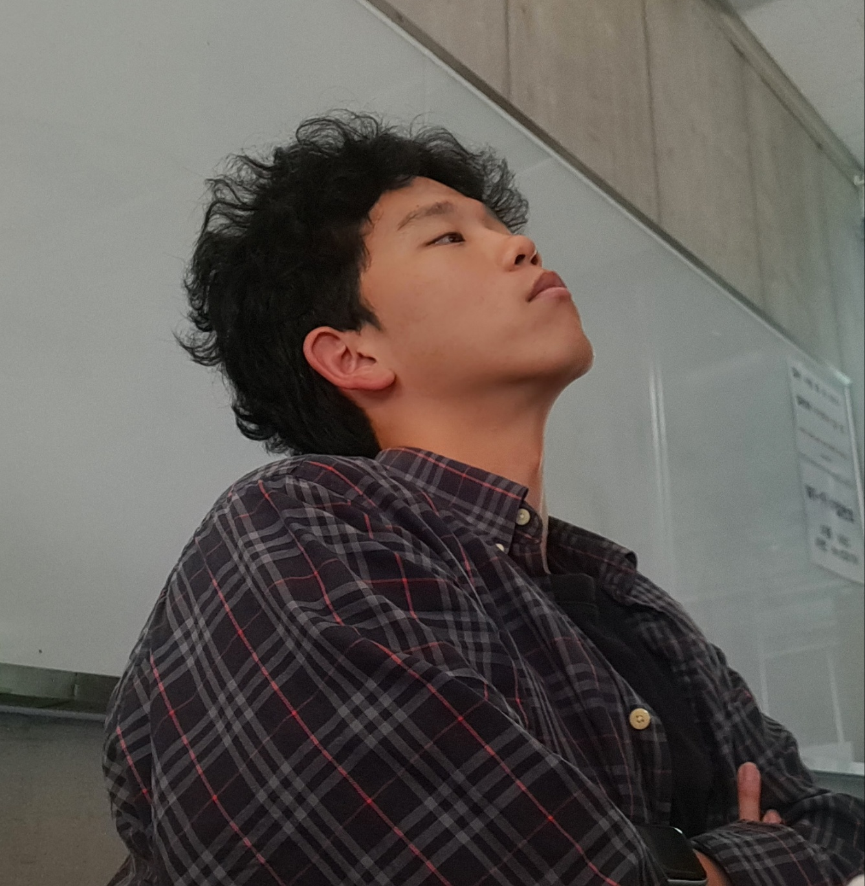
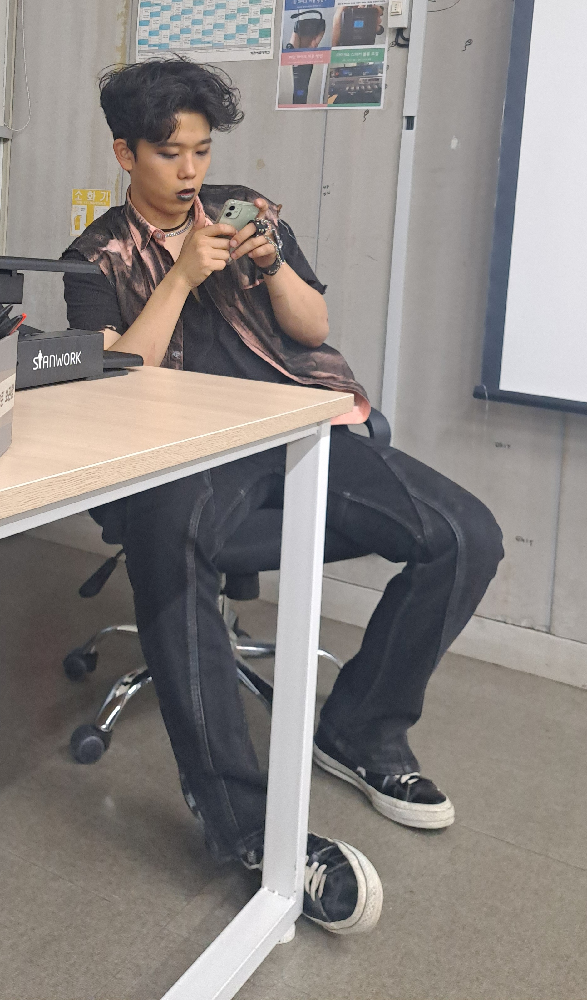
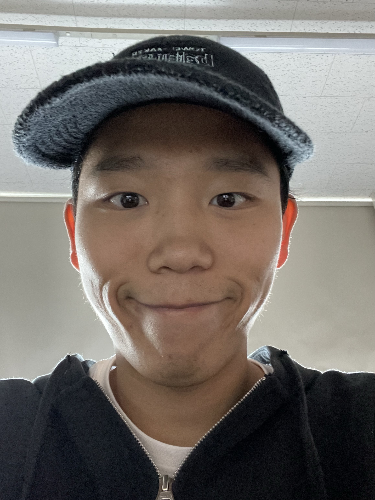

어서와~ 내 홈피는 처음이지?
나랑 친한 사람들을 소개할게




시헌짱 조사
시헌짱에 대해 알아가기!- 나이 : 21
- 사는곳: 송파구
- 좋아하는것 : 담배, 전담, 맥주, 게임, 집, 유흥, 재미있는 사람
- 싫어하는 것 : 말 여러번 하게 하는 사람, 귀찮게 하는 사람
- 하는 일 : 없음 (통학러)
- 잘 하는 일 : 주재훈 놀리기, 게임
- 좋아하는 음식 : 다
(가지빼고)
- 싫어하는 음식 : 가지볶음
(편식쟁이)
- MBTI : INTP
시헌이형과 친해지고 알게 된 점!
- 저의 형은 첫 인상이 무서웠지만 상당히 밝고 착한 성격인 사람
- 게임 엄청 잘하고 공부도 잘 하는 엄친아!!!
- 밥 엄청 빨리 먹음 무슨 사람이 푸드파이터 처럼 먹음... 가끔 같이 밥 먹으면 따라가기 힘듦
- 형이랑 술 먹으면서 취한 거 딱 한번 봤는데 재미있음 근데 술 잘 뺌
이상 이시헌에 대해 알아보았다.저희 형 착해요 무서워하지 마세요

.webp "쁘띠 우성")

우성짱 조사
우성짱에 대해 알아가기!- 나이 : 21
- 사는곳: 예비군 근처
- 좋아하는것 : 담배, 전담, 술, 게임, 집, 돈, 재미있는 사람
- 싫어하는 것 : 예의없는 사람
- 하는 일 : 대학교 다니는 중 (자취생)
- 잘 하는 일 : 주재훈 놀리기, 게임
- 좋아하는 음식 : 뭐지 다 잘 먹음
- 싫어하는 음식 : 떡볶이 빼고 다 좋아함
- MBTI : INFJ
우성이형과 친해지고 알게 된 점!
- 저의 형은 첫 인상이 착하고 밝은 사람이라고 생각했는데 정말 그대로 착한 성격인 사람
- 그림 엄청 잘 그림 옷도 제작 하는 중
- 고향이 전주라서 놀랐지만 은근히 사투리 안 써서 몰랐다..
- 형이랑 술 먹으면서 취한 거 한번도 본적이 없음 근데 계속 먹이고 싶은데 술 엄청 잘 뺌
이상 김우성에 대해 알아보았다.저희 형 엄청 착해요 그러니까 나만 놀릴거야




재웅짱 조사
재웅짱에 대해 알아가기!- 나이 : 25
- 사는곳: 강동구 어딘가
- 좋아하는것 : 게임, 여자친구, 돈, 사랑, 집
- 싫어하는 것 : 예의없는 사람
- 하는 일 : 대학교 다니는 중 (통학러)
- 잘 하는 일 : 게임
- 좋아하는 음식 : 회 뭐지 다 잘 먹음
- 싫어하는 음식 : 참치캔, 서브웨이
- MBTI : INTP
- 저의 형은 첫 인상이 착하고 밝은 사람이라고 생각했는데 정말 그대로 착한 성격인 사람 그리고 장난 치는 걸 좋아하는데 재미있음
- 차도 있어서 같은 방향인 사람들 태워주는데 멋있음 차도 좋음 근데 내가 차에 대해 몰라서 형이 무슨 차를 타고 다니는지 모름
- 형처럼 부지런 하고 생각이 깊은 사람 한번도 본적이 없음 형이랑 진지한 이야기 하면 잘 답해주고 해결 방안도 말해줌
- 형이랑 술 먹으면서 취한 거 한번도 본적이 없음 근데 형이랑 술 먹기 어려운 사람 차타고 오면 운전 땜에 같이 술 못 먹는게 너무 아쉬움
이상 이제웅에 대해 알아보았다.형 나랑 술 먹어요~!